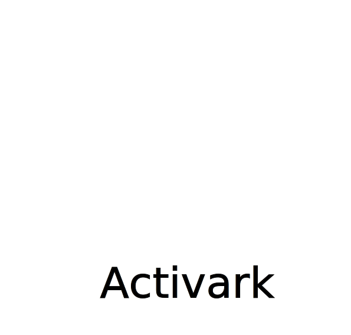

Introduction
Activark is a data-driven, ML-based approach to predict the functional consequence of genetic changes in protein kinases. Activark was trained on a curated dataset of activating (i.e. constitutive-activation or increase in kinase activity), deactivating (i.e. loss or decrease in Kinase activity), and drug-resistance protein variants in human kinases and using sequence and structural features. The following sections describe the methodology used to develop Activark.
To jump to a specific section on this page, click on the links below:

Data source
We used UniProt,
PubMed and
COSMIC databases to obtain what we consider to be a
reliable set of variants that modulate kinase function.
We identified variants that led to:
- constitutive-activation (activating)
- increase (activating)
- loss (deactivating)
- decrease (deactivating)
- drug resistance

Constructing alignment and mapping known functional variants
We aligned the kinase sequences using the hmmalign tool from HMMER (version 3.1b2) against their respective Pfam hidden Markov model profiles (Pkinase and PK_Tyr_Ser-Thr) and trimmed the regions that were outside of the kinase domain. We merged the two alignments using MAFFT (v7.520) and mapped the known functional and neutral variants onto the alignment.
Quick observations
Inspection of the variants revealed some obvious patterns.
- Resistance and activating variants tend to avoid the most conserved and functionally core parts of the kinase catalytic domain and often overlap
- Loss-of-function or deactivating variants very often hit key parts of the enzymatic machinery, particularly the catalytic Lysine and the Aspartate residues in the “HRD'' and “DFG'' motifs
- Regions within the alignment where known activating and deactivating variants often overlap lie within the A-loop, and the N- or C-terminal tails of the kinase domain.

Feature engineering and machine-learning
We applied a random forest algorithm to develop 3 contrasting predictors based on seven types of sequence and structural features:- Pred (A v D): The first predictor, activating vs deactivating, represents a typical situation when one has what is believed to be a functional variant (e.g. observed many times in a cohort or dataset) and wishes to distinguish these two possibilities.
- Pred (A vs D vs N): The second, activating, deactivating or neutral, is more reflective of a situation where one does not know if a variant is functional at all and thus one needs to predict neutrals.
- Pred (R vs N):The third predictor, resistance vs neutral, predicts if a given mutation is resistant or not.
- We avoided contrasting resistance to activating or deactivating due to the considerable overlap between activating and resistance (above) and because resistance variants were from an entirely distinct source.
- This also means that predictions of resistance should probably be considered alongside the other two predictors, since there will necessarily be a tendency to predict many activating or deactivating sites as resistant.

Contacts
Gurdeep Singh gurdeep.singh[at]bioquant[dot]uni-heidelberg[dot]deTorsten Schmenger torsten.schmenger[at]bioquant[dot]uni-heidelberg[dot]de
Rob Russell robert.russell[at]bioquant[dot]uni-heidelberg[dot]de